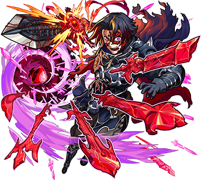

.png)
Lucifer (ルシファー):
.png)
Gabriel:
.png)
Uriel:

Beelzebub:

Caesar:

Zephon:

Surgat:
Binah:

Noah:

Opeko:
Arthur:
.png)
Excalibur:
.png)
Merlin:

Lancelot:

Percival:

Pellinore:
Arawin:
.png)
Solomon:

Levy:

Pandora:
.png)
Mana (マナ):

Nostradamus (ノストラダムス):
.png)
Moses (モーゼ):
.png)
Sherlock Holmes (シャーロックホームズ):
Ryoma Sakamoto (坂本龍馬):

Fujin Raijin (風神雷神):
.png)
Benzaiten (弁財天):

Two for all (ツー・フォー・オール):
Azazel (アザゼル):
.png)
Alice:
.png)
Kamui:
.png)
Miroku:
.png)
God Strike (ゴッドストライク):
.png)
Laplace (ラプラス):
.png)
Amida:
.png)
Hareluya (ハレルヤ): The members of Crown, whose main activity is volunteering to rebuild Tokyo after the Great Power Outage, are able to increase their power and become stronger by collecting "good jobs" from supporters through helping others. Hareluya is still in the lower ranks among the Lynx. She regrets that she was unable to protect Nagi, her childhood friend at the children's center, from a fire that occurred in the past, and she feels that the reason she was given Lynx's power was to protect everyone. Hareluya possesses the power of Yamato Takeru, the god of Japanese mythology, and can control rain clouds.
.png)
Arsene (アルセーヌ):
.png)
Basara (バサラ):
.png)
Anastasia:
.png)
Canon (カノン):
.png)
Ebisu (えびす):
.png)
Kicho (帰蝶):
.png)
Neo (ネオ):
.png)
Polaris:
.png)
Jack the Ripper:
.png)
Abyss:
.png)
Chihaya:
.png)
Arslan:
.png)
Faust (ファウスト):
.png)
Yakumo (ヤクモ): The island nation of Yamato in the far east has been devastated by the invasion of the Twelve Saints, gods created by the pagan group Paraiso, whose leader is the missionary Klaus. The Twelve Saints are false gods who have been implanted with the remains of the soul of the abandoned old god Hiruko, and they use their spiritual power to take revenge on the shogunate that persecuted and oppressed them in the past. Using the spiritual power of the Twelve Saints, Hiruko led an army of humans turned into corpses and threatened the countries ruled by the feudal lords of the shogunate. Concerned about the situation, the shogunate general organizes a group of "God Slayers" to subjugate the Twelve Saints. Yakumo, a girl who was raised as a warrior against the Twelve Saints by the "God Slayers", sets out on a journey with the mission of subjugating the Twelve Saints.
.png)
Memory:
.png)
Kirinji (キリンジ):
.png)
Muse:
.png)
Satori (サトリ):
.png)
Kill × Your × Idol (キル×ユア×アイドル):
.png)
Magia (マギア):
.png)
Sin Guilty (sinギルティ):
.png)
Masamune (マサムネ): In the near future, a girl named Masamune lives in a country that has become a vassal state of a foreign country. "Masamune" is the name of the head of a family that protects the Mikado, the royal family that has ruled the country since ancient times, and she is the one who has taken on the mission of living as the Mikado's protector. This girl, who is the 16th generation, has a unmatched talent, so even though she is from a branch of her family, she has the power that has been passed down from her ancestors, and the "sacred sword" that emits a burning red flash. She usually tries to remain calm and collected in order to fulfill her duties, but because she comes from a special family background, she is somewhat detached from the world, and can be seen to be a little out of touch. . She has a wealth of knowledge about all kinds of weapons, including swords, and knows everything from their structure to how to use them, but she is just clumsy in areas other than combat.

Tera (テラ):

Kairi (カイリ):

Gallon (ガロン):

Candela (カンデラ):

Femto (フェムト):

Nobile (ノービル):

Scherzando (スケルツァンド):
Agitato (アジタート):

Largamente (ラルガメンテ):

Tempestoso (テンペストーソ):

Gokuraku (極楽浄土):
Aaru (アアル):

Tamoanchan (タモアンチャン):

Paraiso (パライソ):

Togenkyo (桃源郷):
.png)
Role (ロール):
.png)
Love (ラブ):
.png)
Fight (ファイト):
.png)
Craft (クラフト):
.png)
Zhong Kui ():
.png)
Bao Qingtian ():
.png)
Xi Shi ():

Xiang Yu ():
.png)
Yue Lao ():
.png)

Saint Seiya:

.png)

Yu Yu Hakusho (幽☆遊☆白書):


Final Fantasy Series (ファイナルファンタジーシリーズ):
.png)

Yu Yu Hakusho - Part 2 (幽☆遊☆白書 - 第2弾):


Pirates of the Caribbean (パイレーツ・オブ・カリビアン):


Fullmetal Alchemist (鋼の錬金術師): An anime series based on the manga series by Hiromu Arakawa. Edward and Alphonse Elric live in Resembool with their mother Trisha and father Van Hohenheim, the latter having left without reason. Trisha soon dies from an illness. After finishing their alchemy training under Izumi Curtis, the Elrics attempt to bring their mother back with alchemy. But the transmutation backfires, and Edward loses his left leg while Alphonse is completely deconstructed. Edward sacrifices his right arm to retrieve Alphonse's soul, binding it to a suit of armor. Edward is invited by Roy Mustang to become a State Alchemist and research a way to restore their bodies, undergoing a painful medical procedure that grants him prosthetic automail limbs. Edward becomes a State Alchemist, with the title of Fullmetal Alchemist. The Elric Brothers begin an extensive search for the legendary Philosopher's Stone in order to restore their bodies.


Monogatari Series (〈物語〉シリーズ):
.png)

The Seven Deadly Sins (七つの大罪): A fantasy manga series written and illustrated by Nakaba Suzuki. The Seven Deadly Sins are a band of knights in the land of Britannia who had disbanded ten years earlier after being framed for plotting a coup of the Liones Kingdom, the Holy Knights who sequestered them before taking control in the wake of a rebellion they organized. Liones' third princess, Elizabeth Liones, finds Meliodas, the Seven Deadly Sins' leader, before they to assemble the remaining members of the Seven Deadly Sins and take back Liones from the Holy Knights, who were manipulated by a demon named Fraudrin into unsealing the Demon Race from their prison.


Kimetsu no Yaiba - Part 3 (鬼滅の刃 - 第3弾): On a supercontinent version of Earth that has four Moons, powerful monsters and supervillains wreak havoc. The millionaire Agoni creates the Hero Association, which employs superheroes to fight evil. Saitama, an unassociated hero, hails from City Z and performs heroic deeds as a hobby. For three years, he has trained enough to defeat any enemy with a single punch, his unmatched strength leaving him bored. He becomes a reluctant mentor to Genos, a cyborg seeking revenge against another cyborg who killed his family and destroyed his hometown, after Saitama defeats a monster that defeated Genos.
.png)

Hunter × Hunter: Hunter × Hunter tells the story of Gon Freecss, a 12-year-old boy who decides to become an official Hunter with the aim of finding his father Ging, whom he never knew. On his new journey he makes new friends: Kurapika, the last remaining member of the Kurta clan who wishes to become a Hunter to avenge his clan; Leorio, a would-be doctor who wants the financial benefits that hunters receive to pay for medical school; and a boy his age named Killua Zoldyck, a former member of the world's most famous assassin family. After the exam, Gon and Killua will learn the elaborate art of Nen and put their new supernatural abilities to the test by competing against other Hunters like themselves.


Final Fantasy Series - Part 2 (ファイナルファンタジーシリーズ - 第2弾):


Star Wars (スターウォーズ): The Star Wars franchise depicts the adventures of characters "A long time ago in a galaxy far, far away", in which humans and many species of aliens co-exist with droids, who may assist them in their daily routines; space travel between planets is common due to lightspeed hyperspace technology. The prequel trilogy focuses on Palpatine's rise to power as galactic emperor and Anakin Skywalker's training as a Jedi before his fall to the dark side as Darth Vader due to Palpatine's machinations, including Anakin's fear of losing his wife, Padmé Amidala. The original trilogy follows their children, Luke and Leia, as they join forces with Han Solo and the Rebel Alliance against Vader, Palpatine, and the Empire. The sequel trilogy features Kylo Ren (Ben Solo)—Leia and Han's son and Luke's former Jedi apprentice—who fell to the dark side and seeks to rule the galaxy with Rey, Luke and Leia's last Jedi apprentice.
.png)

Gintama (銀魂): The story is set in an alternate-history late-Edo period, where humanity is attacked by aliens called "Amanto". Edo Japan's samurai fight to defend Earth, but the shōgun cowardly surrenders when he realizes the aliens' power. He agrees to an unequal contract with the aliens, placing a ban on carrying swords in public and allowing the invaders to enter the country. The samurai's swords are confiscated and the Tokugawa bakufu (shogunate) becomes a puppet government. The series focuses on an eccentric samurai, Gintoki Sakata, who works as an odd-jobs freelancer. He helps a teenager named Shinpachi Shimura save his sister Tae from an alien group that wants to send her to a brothel. Impressed by Gintoki, Shinpachi becomes his freelance apprentice to pay the bills and learn more about the enigmatic samurai. When the pair rescues a teenage alien girl with super-strength, Kagura, from a Yakuza group, they accept her into their freelancing business and the three become known as "Yorozuya".
.png)

Sword Art Online (ソードアート・オンライン): In 2022, a virtual reality massively multiplayer online role-playing game (VRMMORPG) called Sword Art Online (SAO) was released. With the NerveGear, a helmet that stimulates the user's five senses via their brain, players can experience and control their in-game characters with their minds. Both the game and the NerveGear were created by Akihiko Kayaba. On November 6, 10,000 players log into SAO's mainframe cyberspace for the first time, only to discover that they are unable to log out. Kayaba appears and tells the players that they must beat all 100 floors of Aincrad, a steel castle which is the setting of SAO if they wish to be free. He also states that those who suffer in-game deaths or forcibly remove the NerveGear out-of-game will suffer real-life deaths. A player named Kirito is one of 1,000 testers in the game's previous closed beta. With the advantage of previous VR gaming experience and a drive to protect other beta testers from discrimination, he isolates himself from the greater groups and plays the game alone, bearing the mantle of "beater", a portmanteau of "beta tester" and "cheater". As the players progress through the game Kirito eventually befriends a young girl named Asuna.


Rurouni Kenshin (るろうに剣心 -明治剣客浪漫譚-):


Sailor Moon ():

.png)

Yu-Gi-Oh!:
.png)

Bleach (ブリーチ): Ichigo Kurosaki is a teenager from Karakura Town who can see ghosts, a talent allowing him to meet a supernatural human Rukia Kuchiki, who enters the town in search of a Hollow, a kind of monstrous lost soul who can harm both ghosts and humans. Rukia is one of the Soul Reapers, soldiers trusted with ushering the souls of the dead from the World of the Living to the Soul Society, the afterlife realm from which she originates and with fighting Hollows. When she is severely wounded defending Ichigo from a Hollow she pursues, Rukia transfers her powers to Ichigo, so he may fight in her stead while she recovers her strength. Rukia is thereby trapped in an ordinary human body, and must advise Ichigo as he balances the demands of his substitute Soul Reaper duties and attending high school.


Promare:

.png)

My Hero Academia (僕のヒーローアカデミア): In a world where currently most of the human population has gained the ability to develop superpowers called "Quirks", Izuku Midoriya is a young man who dreams of becoming a Hero despite being bullied by his violent childhood friend Katsuki Bakugo for lacking a Quirk. Both youths idolize one of the world's greatest heroes All Might whom they met, with Izuku being one of few to know of a critical injury All Might has been concealing from the public eye to maintain morale. All Might also reveals the nature of his Quirk "One For All" and passes it down to Izuku as his successor after seeing the youth's determination in the face of danger. Izuku began his path to become a hero at the U.A. High School alongside Bakugo and his friends from Class 1-A.
.png)
Gintama - Part 2 (銀魂 - 第2弾): The story is set in an alternate-history late-Edo period, where humanity is attacked by aliens called "Amanto". Edo Japan's samurai fight to defend Earth, but the shōgun cowardly surrenders when he realizes the aliens' power. He agrees to an unequal contract with the aliens, placing a ban on carrying swords in public and allowing the invaders to enter the country. The samurai's swords are confiscated and the Tokugawa bakufu (shogunate) becomes a puppet government. The series focuses on an eccentric samurai, Gintoki Sakata, who works as an odd-jobs freelancer. He helps a teenager named Shinpachi Shimura save his sister Tae from an alien group that wants to send her to a brothel. Impressed by Gintoki, Shinpachi becomes his freelance apprentice to pay the bills and learn more about the enigmatic samurai. When the pair rescues a teenage alien girl with super-strength, Kagura, from a Yakuza group, they accept her into their freelancing business and the three become known as "Yorozuya".


Yo-Kai Watch (妖怪ウォッチ):

Hunter × Hunter (ハンター×ハンター - 第2弾): Hunter × Hunter tells the story of Gon Freecss, a 12-year-old boy who decides to become an official Hunter with the aim of finding his father Ging, whom he never knew. On his new journey he makes new friends: Kurapika, the last remaining member of the Kurta clan who wishes to become a Hunter to avenge his clan; Leorio, a would-be doctor who wants the financial benefits that hunters receive to pay for medical school; and a boy his age named Killua Zoldyck, a former member of the world's most famous assassin family. After the exam, Gon and Killua will learn the elaborate art of Nen and put their new supernatural abilities to the test by competing against other Hunters like themselves.
.png)
.png)

Kimetsu no Yaiba (鬼滅の刃): A great story written and illustrated by Koyoharu Gotoge, full of action, drama, and a strong brotherly bond. Tanjiro Kamado is the eldest son of a very poor family. At the age of 13, he is the only source of income for his family after the death of his father, since the boy makes daily trips to a nearby village to sell coal. But everything changes for him when, upon arriving home from one of his trips, he discovers that his family has been attacked and killed by a demon. Her sister Nezuko is the sole survivor of the incident, but she has been transformed into a demon, but surprisingly still shows signs of human emotion and thought. After training for several months and managing to become a Demon Slayer, Tanjiro travels with Nezuko, not only to find a way to make his sister human again, but also to avenge the death of his family.


Fairy Tail: A magical story written and illustrated by Hiro Mashima. The Kingdom of Fiore is home to numerous guilds where wizards apply their magic for paid job requests. Natsu Dragneel, a Dragon Slayer wizard from the Fairy Tail guild, explores Fiore in search of his missing adoptive father, the dragon Igneel. During his journey, he befriends a young celestial wizard named Lucy Heartfilia and invites her to join Fairy Tail. Natsu, Lucy, and the flying blue cat Happy form a team, which is joined by other guild members: Gray Fullbuster, an ice wizard; Erza Scarlet, a magical knight; and Wendy Marvell and Carla, another Dragon Slayer and Exceed duo. The team embark on numerous missions together, which include subduing criminals, illegal dark guilds, and ancient Etherious demons created by Zeref, a wizard cursed with immortality and deadly power.

Neon Genesis Evangelion (新世紀エヴァンゲリオン): In 2015, fifteen years after a global cataclysm known as the Second Impact, teenager Shinji Ikari is summoned to the futuristic city of Tokyo-3 by his estranged father Gendo Ikari, director of the special paramilitary force Nerv. Shinji witnesses United Nations forces battling an Angel, one of a race of giant monstrous beings whose awakening was foretold by the Dead Sea Scrolls. Because of the Angels' near-impenetrable force-fields, Nerv's giant Evangelion bio-machines, synchronized to the nervous systems of their pilots and possessing their own force-fields, are the only weapons capable of keeping the Angels from annihilating humanity. NERV's officer Misato Katsuragi escorts Shinji into the Nerv complex beneath the city, where his father pressures him into piloting the Evangelion Unit-01 against the Angel. Without training, Shinji is quickly overwhelmed in the battle, causing the Evangelion to go berserk and savagely kill the Angel on its own.
.png)
Lucifer - Dawn of Despair (ルシファー 絶望の夜明け):

Sword Art Online - Alicization (ソードアート・オンライン - アリシゼーション): Kazuto is later recruited to test an experimental FullDive machine, Soul Translator, which has an interface far more realistic and complex than the previous machine he had played, to help RATH, a research and development organization under the Ministry of Defense, develop an artificial intelligence named A.L.I.C.E. He tests the STL by entering the Underworld, a virtual reality cyberspace created with The Seed package. In the UW, the flow of time proceeds a thousand times faster than in the real world, and Kirito's memories of what happens inside are restricted. However, when Johnny Black ambushes and mortally wounds Kazuto with suxamethonium chloride, RATH recovers Kazuto and places him back into the STL to preserve his mind while attempts are made to save him. During his time in Underworld, Kirito befriends Eugeo, a carver in a small village of Rulid, and helps him on a journey to save Alice Zuberg, his friend who was taken by a group of highly skilled warriors known as the Integrity Knights for accidentally breaking a rule of the Axiom Church, the leaders of the Human Empire.
.png)
My Hero Academia - Part 2 (僕のヒーローアカデミア - 第2弾): After passing the exam to obtain a Provisional Hero License, Izuku begins working as an intern with All Might's former sidekick, Sir Nighteye, whose Quirk gives him the power to predict the future. Sir Nighteye believes that Izuku is not worthy of inheriting One For All, but his opinion changes after Izuku helps take down the Shie Hassaikai, a gang of Quirk-enhanced yakuza and their leader Overhaul while rescuing a girl named Eri whose Quirk was being used to create a weapon that erases people's Quirks, despite he was foretold that Izuku would die in the operation.


Attack on Titan (進撃の巨人): Eren Jaeger is a boy who lives in the town of Shiganshina, located on the outermost of three circular walls (Rose, Sina and Maria) protecting their inhabitants from Titans. In the year 845, Wall Maria is breached by two new types of Titans, the Colossal Titan and the Armored Titan. During the incident, Eren's mother is eaten by a titan while Eren escapes. He swears revenge on all Titans and enlists in the military along with his adopted sister Mikasa Ackermann and his best friend Armin Arlert. Five years after Shiganshina's fall, the Colossal Titan attacks the city of Trost, located on the second innermost wall (Wall Rose). Eren helps to successfully defend the city after he discovers a mysterious ability to turn himself into a sentient Attack Titan. Additionally, he regains memories of his father giving him this ability shortly after the fall of Wall Maria, and telling him that the truth about their world can be found in their basement in Shiganshina. These events draw the attention of the Survey Corps and their commander, Erwin Smith, who intend to use his power to reclaim Wall Maria and reach the Jaegers' basement.

The Seven Deadly Sins - Revival of The Commandments (七つの大罪 - 戒めの復活): A fantasy manga series written and illustrated by Nakaba Suzuki. The Seven Deadly Sins are a band of knights in the land of Britannia who had disbanded ten years earlier after being framed for plotting a coup of the Liones Kingdom, the Holy Knights who sequestered them before taking control in the wake of a rebellion they organized. Liones' third princess, Elizabeth Liones, finds Meliodas, the Seven Deadly Sins' leader, before they to assemble the remaining members of the Seven Deadly Sins and take back Liones from the Holy Knights, who were manipulated by a demon named Fraudrin into unsealing the Demon Race from their prison.
.png)

World Trigger (ワールドトリガー): Written and illustrated by Daisuke Ashihara; this sci-fi story takes place in Mikado, a city that is constantly attacked by Neighbors, mysterious beings that come from another dimension through gates. Only the special defense agency known as Border has the technology to deal with this threat. Four years after the first Neighbor gates appeared, Osamu Mikumo, a young Border agent, befriends Yuma Kuga, a mysterious white-haired student who has enrolled in his class. After an incident where he saves Osamu's life in a Neighbor attack, Yuma reveals to his new friend that he is a humanoid Neighbor who has come to Japan through an interdimensional gate, looking for a Border member who is a friend of his father.

Rumic World:


Kamen Rider Series (仮面ライダーシリーズ): a Japanese superhero media franchise consisting of tokusatsu television programs, films, manga, and anime, created by manga artist Shotaro Ishinomori. Kamen Rider media generally features a motorcycle-riding superhero with an insect motif who fights supervillains, often known as kaijin.
.png)

Jujutsu Kaisen (呪術廻戦): This dark fantasy story created by Gege Akutami tells the story of Yuji Itadori, an unnaturally fit high school student living in Sendai. On his deathbed, his grandfather instils two powerful messages within Yuji: "always help others" and "die surrounded by people." Yuji's friends at the Occult Club attracted Curses to their school when they unsealed a rotten finger talisman which Yuji swallowed to protect Megumi Fushiguro and his friends, becoming host to a powerful Curse named Ryomen Sukuna. Due to Sukuna's evil nature, all sorcerers are required to exorcise him (and, by extension, Yuji) immediately. But upon seeing Yuji retaining control over his body, Megumi's teacher Satoru Gojo brings him to the Tokyo Prefectural Jujutsu High School with a proposal to his superiors: postpone Yuji's death sentence and train under Gojo until he consumes all of Sukuna's fingers so the Curse can be eliminated.
.png)

Love Live! Sunshine!! (ラブライブ! サンシャイン!!): This story is set in Uchiura, where one of its schools, the seaside Uranohoshi Girls' Academy, is planned to be shut down and merged with another school in Numazu. Chika Takami, a girl who lacks desires, is inspired by μ's to gather friends and form her own school idol group called Aqours. To prevent their school from shutting down, Aqours enters the Love Live school idol contest which has become more competitive since μ's won.


Dragon Quest - Dai's Great Adventure (ドラゴンクエスト –ダイの大冒険–): A fantastic history written by Riku Sanjo and illustrated by Koji Inada. The story begins with a young boy named Dai remembering a story told to him by his adoptive grandfather, the monster magician Brass, about the defeat of the Demon King Hadlar by the hands of a hero known as Avan. After the defeat of the Demon King Hadlar, all of the monsters were released from his evil will and peace reigned supreme around the world once again for ten years. Some monsters and demons moved to the island of Dermline to live in peace. Dai, the young protagonist of the series, is an orphan and the only human living on the island. Having been raised by Brass and with his best friend, the monster Gome, Dai grows up dreaming of becoming a hero. After Dai befriends Leona, the princess of the Kingdom of Papnica and saves her from peril, Avan comes to the island accompanied by his apprentice, the magician Popp, to become Dai's teacher by her request. However, his training is interrupted by the return of Hadlar, who was resurrected by the Great Demon King Vearn and became the commander of his vast army. Avan sacrifices himself to protect his disciples and Hadlar is temporarily driven away by Dai after he awakens a mysterious power within himself. To honor Avan's final request, Dai, Popp and Gome leave the island and begin their quest to defeat Hadlar and his master to bring peace back to the world.


Dr. Stone: In the year 2019 AD, a mysterious flash suddenly petrifies nearly all human life. The human race frozen in stone for 3,700 years, until in April 5738, a 15-year-old prodigy named Senku Ishigami is suddenly revived to find himself in a world where all traces of human civilization have been eroded by time. Senku sets up a base camp and begins to study the petrified humans in order to determine the cause of the event, as well as a cure. Over the next six months, Senku's friend Taiju Oki wakes up and Senku learns their revival was made possible with nitric acid. With this discovery, they develop a compound that will allow them to instantly revive others. They begin by reviving a famous high school martial artist named Tsukasa Shishio and their classmate (and Taiju's crush) Yuzuriha Ogawa with the goal of rebuilding civilization with a focus on science.

Bleach - Part 2: In the Soul Society Arc, it is revealed that 5th squad captain Sōsuke Aizen framed Rukia for the crime and has been illegally experimenting on Soul Reapers and Hollows. Aizen plans to conquer the Soul Society by using the Hōgyoku, a legendary powerful substance turning Hollows into half Soul Reapers. After faking his death and his reappearance caused a fight with some people, Aizen escapes into Hueco Mundo, the realm of Hollows, and later kidnaps Orihime as she is instrumental in creating the Oken, a power that will allow him to kill the Soul King, the ruler of the Soul Society. After being trained by the Vizards, other exiled Soul Reapers and the victims of Aizen's experiment, Ichigo and his friends travel into Hueco Mundo. Facing a group of Arrancars, who are Hollows given Soul Reaper abilities, led by an elite group known as the Espadas, which are composed of ten Arrancars with exemplary strength. Espadas serve as commanders in Aizen's army and each has the factions of weaker Arrancars. Along with Aizen, Gin Ichimaru and Kaname Tōsen, the Espada as a group possess comparable strength to Soul Reaper captains. After rescuing Orihime, Aizen reveals her kidnapping was a distraction to allow him to take Karakura Town, as its spiritual energy is what is needed for the Oken.


Re:Zero - Starting Life in Another World (Re:ゼロから始める異世界生活): Subaru Natsuki is a NEET who is suddenly summoned to a fantasy-like world. Just after arriving, he is killed while trying to help a young half-elf he befriends, Emilia, who is a candidate to become the next ruler of the Kingdom of Lugunica, only to revive some hours in the past. After dying some times, Subaru realizes that he has the power to turn back time after his death. After successfully helping Emilia, Subaru starts living in one of the Mansions of the Roswaal Mathers as a butler. Out of gratitude and affection for Emilia, Subaru makes use of his newfound ability to protect her and help on her ambition to be successfully appointed as the next queen, also providing assistance to other friends he makes along the way, while suffering due to the pain inflicted on him every time he dies, and carrying along the memories of everything that happened before his power activates, which is forgotten by everybody except for him.


Shaman King: The story revolves around Yoh Asakura, a shaman who has the role of a medium between the worlds of the living and the dead. Yoh seeks to become Shaman King, one able to channel the power of the Great Spirit to reshape the world as they wish, by winning the Shaman Fight, a tournament overseen by the Patch Tribe that occurs once every 500 years. Anna Kyoyama, Yoh's fiancée, soon enters the scene and prescribes a brutal training regimen to prepare him for the tournament. Thus begins the plot that will lead Yoh on a journey that will lead him to befriend Manta Oyamada and encounter other shamans. Yoh's group travels to America to pass the final trial for the right to participate in the Shaman Fight while encountering a group of shamans led by Yoh's estranged twin brother Hao Asakura, the reincarnation of a powerful shaman who wishes to eradicate all humans and create a world for shamans.

Gintama - The Final:


Jujutsu Kaisen 0 (呪術廻戦０): The prequel of Jujutsu Kaisen tells the story of Yuta Okkotsu, a timid, 16-year-old, high-school student who is haunted by Rika Orimoto, the cursed spirit of his childhood friend who died six years prior; they had promised to get married when they grew up. Whenever Yuta is bullied, Rika comes to his defense and violently assaults his attackers. In November 2016, Yuta meets Satoru Gojo, a jujutsu sorcerer under whose guidance he joins the Tokyo Prefectural Jujutsu High School to learn how to control Rika. There, Yuta meets the sorcerers Panda, Maki Zen'in, and Toge Inumaki, who try exorcising Rika but are easily stopped by her. Yuta starts training with Maki, who mentors him in swordsmanship. During a mission, Maki motivates Yuta to fight if he wants to be accepted, which causes him to briefly control Rika to destroy a cursed spirit. After his first mission, Yuta vows to find a way to release Rika from the curse.
.png)
World Trigger - Part 2 (ワールドトリガー - 第2弾): Following the large-scale invasion of Aftokrator, Border experiences a much higher application rate. At this time, the B-Rank Wars begin. Yuma and Chika rise to B-Rank, forming "Tamakoma Second" with Osamu. They participate in the Rank Battles and face various opponents in order to get a spot on the Away Team, a group of agents chosen by Border to go for Away Missions to the Neighborhood, to recover Chika's older brother. Meanwhile, to prevent Border from retaliating against Aftokrator, Galopoula and Rhodokhroun were sent to cripple Border's offensive forces. Only Galopoula sent agents; Rhodokhroun sent Trion Soldiers. The method of attack was left up to Gatlin, who decides it will be to destroy the Away Ship.
.png)
.png)
Kimetsu no Yaiba - Part 2 (鬼滅の刃 - 第2弾): The second part of Tanjiro's story is split in two parts: Mugen Train Arc and Entertainment District Arc. In Mugen Train Arc, a Kasugai crow tells Tanjiro, Zenitsu and Inosuke of their new mission to the Mugen Train, where 40 people have disappeared. After they complete their rehabilition training in the Butterfly Mansion, the trio board the Mugen Train to assist the Flame Hashira Kyojuro Rengoku in his mission to hunt for a demon that has caused forty people to go missing. In Entertainment District Arc, Tanjiro, Zenitsu, and Inosuke accompany the Sound Hashira Tengen Uzui to their next mission - infiltrating the famed Yoshiwara red-light district, where mysterious demons are said to reside.
.png)

Detective Conan (名探偵コナン): Shinichi Kudo is a high school detective who sometimes works with the police to solve cases. During an investigation, he is ambushed and incapacitated by a member of a crime syndicate known as the Black Organization. In an attempt to murder the young detective, they force-fed him a dangerous experimental drug. However, instead of killing him, it turns him into a kid. Adopting the pseudonym Conan Edogawa and keeping his true identity a secret, Kudo lives with his childhood friend Ran Mouri and her father Kogoro Mouri, who is a private detective. Throughout the series, he tags along on Kogoro's cases. Nonetheless, after Kudo solves one, he will use Dr. Agasa's hidden tranquilizer to sedate Kogoro and then uses a voice changer to simulate his voice to reveal the solution. He also enrolls in Teitan Elementary School where he makes friends with a group of classmates who form their own Junior Detective League. While he continues to dig deeper into the Black Organization, he frequently interacts with many other characters.
.png)
Spy × Family: In order to maintain the state of peace between the rival nations of Westalis and Ostania, a Westalian agent code-named "Twilight" is tasked with spying on Donovan Desmond, leader of the National Unity Party within Ostania. However, due to Desmond being notoriously reclusive, the only way Twilight can get close to him is to enroll a child in the same private school as Desmond's sons and pose as a fellow parent. To accomplish this and present the image of a happy family, he creates the alias of Loid Forger, adopts a young orphan girl named Anya, and marries a woman named Yor Briar. However, unbeknownst to him Anya can read minds and Yor is in fact a professional assassin. Neither Loid nor Yor are aware of each other's true identities, or that Anya knows their true professions. Despite these unknown factors and Twilight's occasional lapses of common sense due to years of being a spy, he must learn to play the role of the perfect father and husband in order to carry out his mission.
.png)

Stone Ocean (ストーンオーシャン): In the 6th part of Jojo's Bizarre Adventure, Jotaro Kujo's daughter, Jolyne Cujoh, is convicted of second-degree murder and sentenced to 15 years in Green Dolphin Street Prison, having been framed for the crime by her boyfriend. Prior to her incarceration, Jolyne pricks her finger on a pendant given to her by her father, which is revealed to contain a fragment of a Stand-bestowing Arrow. Jolyne manifests her Stand "Stone Free" before being visited by Jotaro, who attempts to break his daughter out while revealing that she was framed by a follower of Dio Brando. But it turned out to be a trap set for Jotaro as a Stand named Whitesnake extracts Jotaro's memories and Star Platinum in the form of two discs, leaving him in a coma. Jolyne realizes the extent of her father's love for her and resolves to recover his discs from Whitesnake's user.


One Piece: Long ago, the man known as the Pirate King, Gol D. Roger, was executed. However, before his death he revealed to everyone that his treasure, the One Piece, was hidden at the end of the Grand Line. This inspired people to become pirates and sail toward the treasure, beginning the Great Age of Pirates. Twelve years later, a young boy from the East Blue named Monkey D. Luffy dreamed of finding the One Piece, but lost the ability to swim after eating a Devil Fruit giving him the ability to stretch his body like rubber. He was given a straw hat by the pirate Shanks, who would later go on to become an Emperor, one of the four most powerful pirates in the world, on the agreement that he would return the hat once he became a pirate and surpassed Shanks.


Tiger & Bunny 2: The series takes place in "NC 1980" in a re-imagined version of New York City called Stern Bild City, where 45 years before, superpowered individuals known as "NEXT" (an acronym standing for Noted Entities with eXtraordinary Talents) started appearing. Some of them became superheroes. Each of the city's most famous superheroes work for a sponsor company and their uniforms also contain advertising for real-life companies. The story mainly focuses on veteran hero Kotetsu T. Kaburagi, a.k.a. Wild Tiger, who is assigned a new partner: a young man with the same power named Barnaby Brooks, Jr. However, Barnaby and Kotetsu have conflicting opinions on how a superhero should act as they investigate the murder of Barnaby's parents.


Puella Magi Madoka Magica (魔法少女まどか☆マギカ): In the fictional city of Mitakihara, Japan, a middle school student named Madoka Kaname and her best friend, Sayaka Miki, encounter a small, cat-like creature named Kyubey. It offers a contract in which a girl may have any wish granted in exchange for obtaining magical powers and being tasked with fighting witches. Meanwhile, a transfer student and mysterious magical girl named Homura Akemi tries to stop Madoka from making the contract with Kyubey. Madoka and Sayaka then meet Mami Tomoe, an upperclassman at the same school who is also a magical girl. Noticing their indecisiveness on whether to become a magical girl, Mami offers to take Madoka and Sayaka along on her witch hunts so they may learn of the responsibilities that come with being a magical girl. However, after witnessing Mami's death at the hands of a witch, Madoka realizes the life of a magical girl is filled with suffering and pain. This is further enforced by the appearance of Kyoko Sakura, a veteran magical girl whose wish unintentionally caused the death of her family.

Chainsaw Man (チェンソーマン): In a world where dangerous beings known as Devils are born from human fears, Denji is a young man trapped in poverty, working off his deceased father's debt to the yakuza by working as a Devil Hunter, aided by Pochita, his canine companion and Chainsaw Devil. Denji is betrayed by the yakuza, who kill him for a contract with the Zombie Devil. Pochita makes a contract with Denji, merging with him as a human-devil Hybrid, under the condition that Denji live out his dreams. Denji then becomes Chainsaw Man and massacres the yakuza. In the aftermath, he is approached by a team of governmental Devil Hunters, the Public Safety Division, led by Makima, who charms him into joining their ranks. Denji joins Public Safety and is partnered with Aki Hayakawa, a self-destructive Devil Hunter, and Power, the Blood Fiend. Makima promises Denji any favor, provided he kill the Gun Devil, perpetrator of the greatest massacre in human history.
.png)
Re:Zero - Christmas Edition (Re:ゼロから始める異世界生活 - クリスマス仕様): Subaru Natsuki is a NEET who is suddenly summoned to a fantasy-like world. Just after arriving, he is killed while trying to help a young half-elf he befriends, Emilia, who is a candidate to become the next ruler of the Kingdom of Lugunica, only to revive some hours in the past. After dying some times, Subaru realizes that he has the power to turn back time after his death. After successfully helping Emilia, Subaru starts living in one of the Mansions of the Roswaal Mathers as a butler. Out of gratitude and affection for Emilia, Subaru makes use of his newfound ability to protect her and help on her ambition to be successfully appointed as the next queen, also providing assistance to other friends he makes along the way, while suffering due to the pain inflicted on him every time he dies, and carrying along the memories of everything that happened before his power activates, which is forgotten by everybody except for him.


Gundam Series (ガンダムシリーズ): A Japanese military fiction media franchise. Created by Yoshiyuki Tomino and Sunrise, the franchise features giant robots, or mecha, with the name "Gundam". Except for Mobile Suit Gundam 00, which follows the current calendar era, all Gundam series are set in a fictional era, begin after a drastic event or chain of events, and typically involve a major conflict between Earth and space colonies (and in some cases the Moon and terraformed planets).


Fullmetal Alchemist (鋼の錬金術師): An anime series based on the manga series by Hiromu Arakawa. Edward and Alphonse Elric live in Resembool with their mother Trisha and father Van Hohenheim, the latter having left without reason. Trisha soon dies from an illness. After finishing their alchemy training under Izumi Curtis, the Elrics attempt to bring their mother back with alchemy. But the transmutation backfires, and Edward loses his left leg while Alphonse is completely deconstructed. Edward sacrifices his right arm to retrieve Alphonse's soul, binding it to a suit of armor. Edward is invited by Roy Mustang to become a State Alchemist and research a way to restore their bodies, undergoing a painful medical procedure that grants him prosthetic automail limbs. Edward becomes a State Alchemist, with the title of Fullmetal Alchemist. The Elric Brothers begin an extensive search for the legendary Philosopher's Stone in order to restore their bodies.
.png)

That Time I Got Reincarnated as a Slime (転生したらスライムだった件): An anime series based on the light novel series written by Fuse. Satoru Mikami is an ordinary 37-year-old corporate worker living in Tokyo. He is almost content with his monotonous life, despite the fact that he doesn't have a girlfriend. During a casual encounter with his colleague, an assailant pops out of nowhere and stabs him. While succumbing to his injuries, a mysterious voice echoes in his mind and recites a series of commands of which he could not make sense. After regaining consciousness, Satoru discovers that he has been reincarnated as a Slime in an unfamiliar world. At the same time, he also acquires new-found skills, particularly the ability called "Predator," which allows him to devour anything and mimic its appearance and skills. He stumbles upon Veldora, a powerful 'Storm Dragon', who has been sealed for the last 300 years for reducing a town to ashes. Feeling sorry for him, Satoru befriends the dragon, promising to help him in destroying the seal. They decide to exchange names, Veldora bestows upon him name Rimuru, and receives name Tempest in return.
.png)
.png)

Kaguya-sama: Love Is War (かぐや様は告らせたい): In the senior high school division of Shuchiin Academy, student council president Miyuki Shirogane and vice president Kaguya Shinomiya appear to be a perfect match. Kaguya is the daughter of a wealthy conglomerate family, and Miyuki is the top student at the school and well-known across the prefecture. Although they like each other, they are too proud to confess their love, as they believe whoever does so first would "lose" in their relationship. The story follows their many schemes to make the other one confess or at least show signs of affection.
.png)
Attack on Titan - Part 2 (進撃の巨人 - 第2弾): Eren and his companions return to his childhood home, where they discover the truth of their world: they are actually Eldians, sworn enemies of the conquering Marleyans who were enclosed within the walls after the original King Karl Fritz fled from the war. They are not the last humans as they were told, but rather an enclosed sect of Eldians on an isolated island called Paradis. Because they are "Subjects of Ymir" who can be turned into Titans by being injected with Titan spinal fluid, the Eldians continue to be oppressed by Marley. In the year after the battle of Shiganshina, the Survey Corps kill all of the remaining Pure Titans on the island. Three years later, the Survey Corps launch an attack against the Marleyan capital of Liberio, orchestrated by Eren and his half-brother Zeke, who is the owner of the Beast Titan.
.png)

Hell's Paradise: Jigokuraku (地獄楽): Captured during an assassination mission, Gabimaru the Hollow is sentenced to be executed, but nothing seems to kill him due to his superhuman body. Believing his love for his wife to be subconsciously keeping him alive, executioner Yamada Asaemon Sagiri offers him the chance to be pardoned of all crimes by the Shogunate if he finds the elixir of life on Shinsenkyo, a legendary realm recently discovered southwest of the Ryukyu Kingdom. After losing five expedition teams sent to the island, this time the Shogunate sends a group of death row convicts. The convicts are each given a Yamada Asaemon executioner, who they must return with in order to obtain the pardon.

Kimetsu no Yaiba - Swordsmith Village Arc (鬼滅の刃 - 刀鍛冶の里編): An Upper Rank Demon has been defeated for the first time in a hundred years by Uzui, Tanjiro, and his comrades' effort. This news causes a ripple effect not only among the members of the Demon Slayer Corps, but also the Upper Rank Demons, who have been summoned by Muzan Kibutsuji. Meanwhile, Tanjiro travels to the Swordsmith Village to replace his sword because Hotaru Haganezuka is tired of repairing it. He later discovers that The Love Hashira, Mitsuri Kanroji, Genya Shinazugawa, and Mist Hashira Muichiro Tokito are also at the village as well. However, it turns out the village is in grave danger as two Upper Rank demons are sent by Muzan to destroy it to cripple the Demon Slayer corps. Now, Tanjiro, Nezuko, and their new allies in this fight band together to stop the demons and protect the village.
.png)
Sword Art Online - Summer Edition (ソードアート・オンライン - 夏仕様): In 2022, a virtual reality massively multiplayer online role-playing game (VRMMORPG) called Sword Art Online (SAO) was released. With the NerveGear, a helmet that stimulates the user's five senses via their brain, players can experience and control their in-game characters with their minds. Both the game and the NerveGear were created by Akihiko Kayaba. On November 6, 10,000 players log into SAO's mainframe cyberspace for the first time, only to discover that they are unable to log out. Kayaba appears and tells the players that they must beat all 100 floors of Aincrad, a steel castle which is the setting of SAO if they wish to be free. He also states that those who suffer in-game deaths or forcibly remove the NerveGear out-of-game will suffer real-life deaths. A player named Kirito is one of 1,000 testers in the game's previous closed beta. With the advantage of previous VR gaming experience and a drive to protect other beta testers from discrimination, he isolates himself from the greater groups and plays the game alone, bearing the mantle of "beater", a portmanteau of "beta tester" and "cheater". As the players progress through the game Kirito eventually befriends a young girl named Asuna.


Kingdom (キングダム): Born during the Warring States period of ancient China, Xin and Piao are war-orphans working as servants in a poor village in the kingdom of Qin. However, they dream to become the "Great Generals of the Heavens" and train daily. One day, Piao is taken to the palace for an unknown purpose by a minister and Xin is left behind. A few months later, Piao returns to the village on the verge of death, urging Xin to travel to another village. There, Xin meets a boy nearly identical to Piao, Ying Zheng the current King of Qin. Xin learns that Piao served as a body double for Ying Zheng and was mortally wounded in a power struggle for the throne. Though initially furious at Ying Zheng for causing Piao's death, Xin decides to seize the opportunity and aids Ying Zheng in ousting his younger half-brother Cheng Jiao and reclaiming the Qin throne. Successful in this endeavor, Xin starts his military life as a Qin soldier and then commander on the battlefields of the warring states of China. He relentlessly pursues his goal of becoming the "Greatest General in the World", also helping King Zheng of Qin achieve his dream of unification to end the incessant warfare once and for all.
.png)
Tokyo Revengers (東京リベンジャーズ): Takemichi Hanagaki, a 26-year-old freeter, learns one day that his middle school ex-girlfriend, Hinata Tachibana, as well as her younger brother Naoto, have been killed by the Tokyo Manji Gang. When Takemichi is pushed in front of a train, he teleports exactly 12 years into the past to 2005. While reliving his middle school years, Takemichi meets with Naoto and divulges the exact date he and Hinata will die. When they shake hands, Takemichi is suddenly transported back to the present, creating a time paradox where Naoto survives and is now a detective. Naoto deduces that every time they hold hands, Takemichi is transported 12 years into the past. Using his knowledge from the future, Takemichi vows to save Hinata.
.png)

Stardust Crusaders (スターダストクルセイダース): In the 3rd part of Jojo's Bizarre Adventure, Jotaro Kujo, grandson of Joseph Joestar, has been arrested, and refuses to leave his cell, believing he is possessed by an evil spirit. After being called by Holly, Joseph's daughter and Jotaro's mother, Joseph arrives with an associate, Mohammed Avdol. They explain that Jotaro's "evil spirit" is actually a manifestation of his fighting spirit, called a Stand, and reveal that they possess Stands as well. Joseph explains that the sudden appearance of their Stands is caused by the nemesis of his grandfather, Jonathan Joestar: Dio Brando, now referred to simply as Dio. Dio has survived his final battle with Jonathan by decapitating his nemesis's corpse and attaching his own head to it. Now preparing for global conquest, Dio has awoken his own Stand and recruited Stand-using assassins to kill Jonathan's remaining descendants. Soon after, Jotaro uses his Stand, which is later named Star Platinum, to defeat the first of these assassins, a transfer student named Noriaki Kakyoin, before freeing Kakyoin from Dio's control by removing a parasitic flesh bud from him. Holly soon becomes gravely ill due to a Stand manifesting in her, which is slowly killing her due to her reserved personality. With little hesitation, Jotaro, Joseph, Avdol, and Kakyoin begin a journey to Egypt to kill Dio and save Holly's life.


The Eminence in Shadow (陰の実力者になりたくて!): A boy in modern-day Japan aspires to be a mastermind exerting power from the shadows. During his training, he is gets hit by a truck and dies, then is reborn in a fantasy world as Cid Kagenou. Here, he maintains a presence of mediocrity appearance so as to not stand out and pursue his dream. He cures an elven girl suffering from a disease. Cid, lying to her, explains that this world is run by the Cult of Diablos and that his organization, Shadow Garden, can defeat them. The elf, now named Alpha, "joins" and begins recruiting new members. In fact, the power struggle he described really exists. Under the alias of "Shadow", he now fights it.
.png)
Spy × Family - Code white: After receiving an order to be replaced in Operation Strix, Loid decides to help Anya win a cooking competition at Eden Academy by making the principal's favorite meal in order to prevent his replacement. The Forgers decide to travel to the meal's origin region, where they set off a chain of actions which could potentially put the world's peace at risk.
.png)
Jujutsu Kaisen (呪術廻戦): October 31, 2018. A curtain with a four-hundred meter radius is cast around Shibuya. The center of the curtain is at the Tokyu Department Store. It only traps non-sorcerers, making it so civilians can enter but not exit. Sorcerers can enter and exit the curtain at will, but it depends on the person when it comes to windows. All the civilians inside the curtain are spread out around its perimeter asking for the same thing: "Bring Satoru Gojo." The advanced barrier technique and targeting Satoru points to the culprits being the same as the invaders of the Goodwill Event. The higher-ups instruct Satoru to work alone in order to suppress this major jujutsu terrorist attack and minimize any potential casualties. They also dispatch four squads of jujutsu sorcerers to safeguard the perimeter outside the curtain in case anything gets past him.


Mobile Suit Gundam SEED Freedom (機動戦士ガンダムシードフリーダム): In 75 C.E. the battle was still on. Independence movements, invasion by Blue Cosmos... In order to calm down the situation, a world peace monitoring organization, Compass, is established with Lacus as the first president. Kira and his friends intervene in battles in various places as members. At that time, the Emerging Countries Foundation proposed a joint operation with Compass against Blue Cosmos headquarters.

Fire Force (炎炎ノ消防隊): In Year 198 of Tokyo's Solar Era, special fire brigades called the Fire Force fight increasing incidents of spontaneous human combustion where human beings are turned into living infernos called "Infernals". While the Infernals are first generation cases of spontaneous human combustion, with more powerful horned variations known as Demons, later generations possess pyrokinesis while retaining human form. The Fire Force was formed by combining people with these powers from the Holy Sol Temple, The Tokyo Armed Forces, and the Fire Defense Agency, and is composed of eight independent companies. Shinra Kusakabe is a third generation pyrokinetic youth who gained the nickname "Devil's Footprints" for his ability to ignite his feet at will, and was ostracized as a child for the fire that killed his mother and younger brother Sho twelve years ago. He joins Special Fire Force Company 8, which features other pyrokinetics who dedicated themselves to ending the Infernal attacks for good while investigating Companies 1 through 7 for potential corruption in their ranks. Shinra begins to learn that the fire that killed his mother was a cover for his younger brother to be taken by the White Clad, a doomsday cult behind the Infernal attacks with agents within the facets of the Tokyo Empire. Company 8 and their allies oppose the White Clad while learning of their goal to gather eight individuals like Shinra and Sho.
.png)

Frieren - Beyond Journey's End (葬送のフリーレン): The story follows elven mage Frieren, a former member of the party of adventurers who defeated the Demon King and restored harmony to the world after a ten-year quest. In the past, the heroic group included Frieren, human hero Himmel, dwarven warrior Eisen, and human priest Heiter. Before they part, they observe the Era Meteors together, a meteor shower that occurs once in fifty years. Frieren agrees to see them again and offers them a better view the next time the celestial event occurs. Frieren then departs and travels the world in pursuit of magical knowledge. Frieren returns to the capital fifty years later; however, humanity has changed, and her former companions have distinctly aged. After one last adventure to see the meteor shower, Himmel dies of old age. During the funeral, Frieren expressed guilt for not attempting to learn more about him. She also receives an invitation to travel far north, to the resting place of souls, and see Himmel again to bid the hero a fitting farewell and express her feelings. To fulfill those requests, Frieren embarks on a journey together while still pursuing her passion for learning magic.